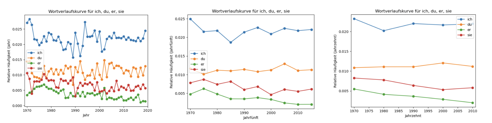

Datenanalyse Teil 2#
Willkommen zurück! Hier geht es nahtlos weiter mit der Datenanalyse mithilfe von Python und konkret mit pandas. Wir schauen uns erst an, wie wir DataFrames filtern sowie Werte darin bearbeiten können. Anschließend widmen wir uns dem Anwendungsfall und visualisieren eine Wortverlaufskurve.
Bevor wir mit den Daten aus dem ersten Teil des Notebook weiterarbeiten können, müssen wir diese nochmals in den Arbeitsspeicher laden. Führ dazu folgende Code-Zelle aus, die den relevanten Code des ersten Teils wiederholt.
import pandas as pd
#Datei in Arbeitsspeicher laden
with open("../3_Dateien/Songkorpus/songkorpus_token.tsv") as f:
songkorpus = pd.read_csv(f, sep="\t")
#Umbenennen der Spalten
songkorpus.columns = ["Token", "Jahr", "Häufigkeit"]
#Anfügen einer Spalte für das Jahrzehnt (hier mittels List Comprehension)
songkorpus["Jahrzehnt"] = [str(year)[:-1] + "0" for year in songkorpus["Jahr"]]
#Anfügen einer Spalte für die Länge der Tokens (hier mittels List Comprehension)
songkorpus["Länge"] = [len(str(token)) for token in songkorpus["Token"]]
DataFrame filtern#
Zunächst wollen wir herausfinden, wie wir ein DataFrame filtern können. Die grundlegende Syntax sieht wie folgt aus:
DataFrame[filter]
filter wiederum kann unterschiedlich ausschauen, je nach dem, wie wir unser DataFrame filtern wollen. Ein einfaches Beispiel für filter sieht so aus:
DataFrame[column] == value
Dieser Filter verlangt, dass bei DataFrame in der Spalte column exakt der Wert value steht.
Fügen wir diesen Filter in der obigen Syntax ein und schaffen ein Sub-DataFrame, das alle Zeilen des songkorpus beinhaltet, in denen in der Spalte Token das Wort „Liebe“ steht:
liebe = songkorpus[songkorpus["Token"] == "Liebe"]
liebe.head(5)
| Token | Jahr | Häufigkeit | Jahrzehnt | Länge | |
|---|---|---|---|---|---|
| 100396 | Liebe | 1969 | 1 | 1960 | 5 |
| 100397 | Liebe | 1970 | 93 | 1970 | 5 |
| 100398 | Liebe | 1971 | 106 | 1970 | 5 |
| 100399 | Liebe | 1972 | 104 | 1970 | 5 |
| 100400 | Liebe | 1973 | 152 | 1970 | 5 |
Das klappt wunderbar. Spiel gerne mit anderen Begriffen herum.
✏️ Übung 1: Erstell ein Sub-DataFrame, das nur Tokens beinhaltet, die mindestens 20 Zeichen lang sind.
#In diese Zelle kannst Du den Code zur Übung schreiben.
Abgesehen von Vergleichsoperatoren (==, !=, >, <, >= und <=, vgl. Notebook „Einführung“) bei numerischen Werten (alle Operatoren) bzw. strings (nur die ersten beiden) können wir bei strings auch andere Methoden in den Filter einbauen. Pandas bietet sowohl solche an, die wir bereits von gewöhnlichen strings kennen (vgl. Notebook „Funktionen und Methoden Teil 1“), als auch ein paar eigene. Wichtig ist, dass die Methoden die Boolschen Werte True oder False zurückgeben. Das heißt, startswith funktioniert, split hingegen nicht. String-Methoden bei pandas beginnen immer mit str, gefolgt von der Methode, also etwa str.startswith(). Außerdem müssen wir ihnen in einigen Fällen den Parameter na=False übergeben. Hier ein paar Beispiele:
liebe_startswith = songkorpus[songkorpus["Token"].str.startswith("liebe", na=False)] #Wie normale string-Methode in Python
liebe_endswith = songkorpus[songkorpus["Token"].str.endswith("liebe", na=False)] #Wie normale string-Methode in Python
liebe_contains = songkorpus[songkorpus["Token"].str.contains("liebe", na=False)] #Pandas-eigene Methode
print(len(liebe_startswith), len(liebe_endswith), len(liebe_contains))
liebe_contains
217 108 398
| Token | Jahr | Häufigkeit | Jahrzehnt | Länge | |
|---|---|---|---|---|---|
| 16012 | Belieben | 2008 | 1 | 2000 | 8 |
| 19998 | Bliebe | 1969 | 1 | 1960 | 6 |
| 19999 | Bliebe | 1970 | 1 | 1970 | 6 |
| 20000 | Bliebe | 2011 | 1 | 2010 | 6 |
| 20001 | Blieben | 1973 | 3 | 1970 | 7 |
| ... | ... | ... | ... | ... | ... |
| 379600 | zuliebe | 2003 | 4 | 2000 | 7 |
| 379886 | zurückgeblieben | 2001 | 1 | 2000 | 15 |
| 379887 | zurückgebliebene | 2012 | 1 | 2010 | 16 |
| 379967 | zurückzulieben | 2010 | 1 | 2010 | 14 |
| 384623 | übriggeblieben | 1990 | 2 | 1990 | 14 |
398 rows × 5 columns
✏️ Übung 2: Erstell das gleiche Sub-DataFrame wie in Übung 1 (also eines, das nur Tokens beinhaltet, die mindestes 20 Zeichen lang sind), allerdings ohne dabei die Spalte „Länge“ zu bemühen. Du kannst dazu eine Methode verwenden, die auch bei normalen strings funktioniert. Stell sicher, dass die Ergebnisse der beiden Übungen identisch sind.
#In diese Zelle kannst Du den Code zur Übung schreiben.
Gut zu wissen: Filter können auch miteinander kombiniert werden. Dazu verwenden wir die logischen Operatoren aus dem Notebook „Kontrollstrukturen“, die bei pandas allerdings in einem anderen Gewand daherkommen:
&steht für fürand|steht füror
Außerdem steht ~ steht für not und kann zur Negation eines in runde Klammern gesetzten, einzelnen Filters benutzt werden.
Unter Verwendung von & können wir beispielsweise alle (potenziellen) regelmäßigen Partizip II-Formen extrahieren:
songkorpus[songkorpus["Token"].str.startswith("ge", na=False) & songkorpus["Token"].str.endswith("t", na=False)]
| Token | Jahr | Häufigkeit | Jahrzehnt | Länge | |
|---|---|---|---|---|---|
| 249692 | ge-ge-gehemmt | 1995 | 1 | 1990 | 13 |
| 249695 | geachtet | 1971 | 1 | 1970 | 8 |
| 249696 | geachtet | 1973 | 3 | 1970 | 8 |
| 249697 | geachtet | 1980 | 1 | 1980 | 8 |
| 249698 | geachtet | 1984 | 1 | 1980 | 8 |
| ... | ... | ... | ... | ... | ... |
| 260388 | geübt | 2011 | 1 | 2010 | 5 |
| 260389 | geübt | 2012 | 2 | 2010 | 5 |
| 260390 | geübt | 2016 | 1 | 2010 | 5 |
| 260391 | geübt | 2018 | 1 | 2010 | 5 |
| 260392 | geübt | 2019 | 1 | 2010 | 5 |
5125 rows × 5 columns
Bedenke, dass auch falsch positive Ergebnisse dabei sein könnten sowie dass falsch negative fehlen könnten (vgl. Wahrheitsmatrix aus dem Notebook „Input und Output Teil 1“).
Nun wissen wir, wie wir ein DataFrame filtern können.
Werte zählen#
Dieses Wissen können wir auch einsetzen, um spezifische Werte – im Gegensatz zu allen Werten wie bei value_counts oben – in einer Spalte auszuzählen:
len(songkorpus[songkorpus["Token"] == "Wunderkind"])
5
Wir filtern also das DataFrame („alle Zeilen, in denen ‚Wunderkind‘ in der Spalte ‚Token‘ steht“) und lassen uns ganz einfach seine Länge (sprich die Anzahl an Zeilen) ausgeben.
Werte bearbeiten#
Auch zum Bearbeiten von Werten benötigen wir nur bereits erlerntes Wissen. Grundsätzlich können wir alles von einem kompletten DataFrame, über eine Series (in Form einer Spalte oder Zeile) bis hin zu einzelnen, spezifischen Werten bearbeiten.
Die Möglichkeiten der Bearbeitung hängen natürlich vom Datentyp der Werte ab. In unserem DataFrame haben wir einerseits strings und andererseits numerische Werte. Spalten weisen jeweils einen homogen Datentyp auf.
Die Logik ist unabhängig davon, was wir wie bearbeiten, immer die gleiche: Wir greifen auf den gewünschten Ausschnitt des DataFrame zu (s. o.) und überschreiben ihn mit demselben Ausschnitt in bearbeiteter Form. Anstatt sie zu überschreiben können wir die bearbeiteten Werte natürlich immer auch einer neuen Spalte oder Zeile (desgleichen oder eines neuen DataFrame) zuweisen, sofern die jeweiligen Dimensionen übereinstimmen (s. o.).
strings#
Auf strings angewandt sieht das so aus, wenn wir etwa alle Tokens kleinschreiben wollen. Auch hier setzen wir str vor die pandas-string-Methode:
songkorpus["Token"] = songkorpus["Token"].str.lower()
songkorpus
| Token | Jahr | Häufigkeit | Jahrzehnt | Länge | |
|---|---|---|---|---|---|
| 0 | klaround | 2007 | 1 | 2000 | 8 |
| 1 | #3 | 2009 | 1 | 2000 | 2 |
| 2 | #babo | 2015 | 1 | 2010 | 5 |
| 3 | #jesuispasséchezso | 2018 | 1 | 2010 | 18 |
| 4 | #nachbar | 2016 | 1 | 2010 | 8 |
| ... | ... | ... | ... | ... | ... |
| 386505 | vierzehn | 2020 | 1 | 2020 | 9 |
| 386506 | was | 2020 | 1 | 2020 | 4 |
| 386507 | weißer | 2020 | 1 | 2020 | 7 |
| 386508 | wie | 2020 | 1 | 2020 | 4 |
| 386509 | wozu | 2020 | 1 | 2020 | 5 |
386510 rows × 5 columns
Diese einzeilige Syntax hat es in sich: Man kann sie sich in gewohnter Python-Logik wie eine Iteration vorstellen: Im vorliegenden Fall wird Wort für Wort (in der Spalte „Token“) kleingeschrieben. Mit dem Resultat wird die Spalte überschrieben. Sie ist dennoch nicht mit einer List Comprehension, die ja auch nur eine einzige Zeile benötigt, zu verwechseln. Denn im Gegensatz zu pythonischen for-Loops und ihre simplifizierte Version List Comprehension, wird der Code mit der pandas-eigenen Syntax oft wesentlich schneller berechnet (teils über 1000 Mal schneller!). Grund dafür ist die sog. Vektorisierung. Ganz einfach forumuliert wird dabei dieselbe Operation nicht auf ein Element nach dem anderen angewandt (wie bei for-Loops), sondern auf mehrere gleichzeitig. Außerdem sind pandas-Operationen im Gegensatz zu nativem Python-Code (for-Loops) speziell auf Effizienz ausgelegt. Wenn Du Dich dafür interessierst, findest Du u. a. in diesem Artikel und diesem Video Anknüpfungspunkte. Weiter unten folgen Übungen zum Vergleich von nativem Python-Code und pandas-Code.
Zusätzlich zu den bisher verwendeten string-Methoden lower, startswith, endswith und len bietet pandas u. a. folgende an, die allesamt wie ihre nativen Python-Pendants funktionieren (vgl. Notebook „Funktionen und Methoden Teil 1“):
upper,capitalize,swapcase,isupperundislowerzur Bearbeitung/Überprüfung von Groß-/Kleinschreibung der strings.splitzum Splitten der strings, optional mit dem Parameterexpand=True, um jedem unterteilten Element eine neue Spalte zuzuweisen.replacezum Ersetzen aller Vorkommen eines strings/regulären Ausdrucks (hier zusätzlichregex=Truespezifizieren) mit einem anderen string.countzum Berechnen der Auftretenshäufigkeit eines strings/regulären Ausdrucks in den strings.strip,lstripundrstripzum Entfernen von (leading/trailing) whitespace in den strings.
Neben contains (s. o.) ist außerdem slice eine nützliche pandas-string-Methode, die abweichend von ihrem nativen Python-Pendant heißt: slice mit den Argumenten start, stop, step implementiert die Funktionalität der eckigen Klammern, die wir bei normalen Python-strings zum Slicen verwenden.
Hier findest Du mehr Infos zu sämlichen string-Methoden bei pandas. Denk stets daran, str vor die jeweilige string-Methode zu hängen!
Zwei letzte praktische Methoden sind isin(list) und shift(n), die aber nicht string-spezifisch sind, weswegen wir kein str vor die Methode hängen. isin überprüft, ob ein Wert Element der übergebenen Liste ist und gibt eine Series mit Boolschen Werten zurück. shift wiederum lässt uns auf den Inhalt benachbarter Zeilen zugreifen, konkret auf den Inhalt der um n nach oben (n) bzw. nach unten (-n) geshifteten Zeile. Das macht shift insbesondere für die Erstellung von n-grammen interessant. Die folgende Code-Zelle demonstriert die Erstellung von Bigrammen basierend auf einer Spalte mit Tokens (Unigrammen):
ngram_df = pd.DataFrame(["Ich", "gehe", "am", "Abend", "noch", "spazieren"], columns=["unigram"])
ngram_df["bigram"] = ngram_df["unigram"] + " " + ngram_df["unigram"].shift(-1)
ngram_df
| unigram | bigram | |
|---|---|---|
| 0 | Ich | Ich gehe |
| 1 | gehe | gehe am |
| 2 | am | am Abend |
| 3 | Abend | Abend noch |
| 4 | noch | noch spazieren |
| 5 | spazieren | NaN |
So einfach kann die Berechnung von n-grammen sein!
Numerische Werte#
Bei numerischen Werten wiederum können wir ganz einfach arithmetische Operatoren (vgl. Notebook „Einführung“) verwenden, etwa um alle Werte einer Spalte zu verdoppeln:
#Führ diese Zeile nur einmal aus, denn mit jedem Mal verdoppeln sich die Werte.
songkorpus["Häufigkeit"] = songkorpus["Häufigkeit"] * 2
songkorpus
| Token | Jahr | Häufigkeit | Jahrzehnt | Länge | |
|---|---|---|---|---|---|
| 0 | klaround | 2007 | 2 | 2000 | 8 |
| 1 | #3 | 2009 | 2 | 2000 | 2 |
| 2 | #babo | 2015 | 2 | 2010 | 5 |
| 3 | #jesuispasséchezso | 2018 | 2 | 2010 | 18 |
| 4 | #nachbar | 2016 | 2 | 2010 | 8 |
| ... | ... | ... | ... | ... | ... |
| 386505 | vierzehn | 2020 | 2 | 2020 | 9 |
| 386506 | was | 2020 | 2 | 2020 | 4 |
| 386507 | weißer | 2020 | 2 | 2020 | 7 |
| 386508 | wie | 2020 | 2 | 2020 | 4 |
| 386509 | wozu | 2020 | 2 | 2020 | 5 |
386510 rows × 5 columns
Hierfür funktionieren auch die anderen uns bekannten arithmetischen Operatoren: + für Addition (eignet sich überdies zur Konkatenation von strings), - für Subtraktion, / für Division und ** fürs Potenzieren.
Datentyp ändern#
Sollten Werte mal im falschen Datentyp vorliegen, kann man (sofern sinnvoll) die Methode astype verwenden, um Werte in den gewünschten Datentyp zu casten. Wenn wir z. B. die Häufigkeiten wieder in den Originalzustand versetzen wollen, können wir erst alle Werte in der entsprechenden Spalte halbieren…
songkorpus["Häufigkeit"] = songkorpus["Häufigkeit"] / 2
songkorpus
| Token | Jahr | Häufigkeit | Jahrzehnt | Länge | |
|---|---|---|---|---|---|
| 0 | klaround | 2007 | 1.0 | 2000 | 8 |
| 1 | #3 | 2009 | 1.0 | 2000 | 2 |
| 2 | #babo | 2015 | 1.0 | 2010 | 5 |
| 3 | #jesuispasséchezso | 2018 | 1.0 | 2010 | 18 |
| 4 | #nachbar | 2016 | 1.0 | 2010 | 8 |
| ... | ... | ... | ... | ... | ... |
| 386505 | vierzehn | 2020 | 1.0 | 2020 | 9 |
| 386506 | was | 2020 | 1.0 | 2020 | 4 |
| 386507 | weißer | 2020 | 1.0 | 2020 | 7 |
| 386508 | wie | 2020 | 1.0 | 2020 | 4 |
| 386509 | wozu | 2020 | 1.0 | 2020 | 5 |
386510 rows × 5 columns
…und, da Resultat einer Division immer Dezimalzahlen sind (s. Nachkommastelle), anschließend in Ganzzahlen casten:
songkorpus["Häufigkeit"] = songkorpus["Häufigkeit"].astype(int)
songkorpus
| Token | Jahr | Häufigkeit | Jahrzehnt | Länge | |
|---|---|---|---|---|---|
| 0 | klaround | 2007 | 1 | 2000 | 8 |
| 1 | #3 | 2009 | 1 | 2000 | 2 |
| 2 | #babo | 2015 | 1 | 2010 | 5 |
| 3 | #jesuispasséchezso | 2018 | 1 | 2010 | 18 |
| 4 | #nachbar | 2016 | 1 | 2010 | 8 |
| ... | ... | ... | ... | ... | ... |
| 386505 | vierzehn | 2020 | 1 | 2020 | 9 |
| 386506 | was | 2020 | 1 | 2020 | 4 |
| 386507 | weißer | 2020 | 1 | 2020 | 7 |
| 386508 | wie | 2020 | 1 | 2020 | 4 |
| 386509 | wozu | 2020 | 1 | 2020 | 5 |
386510 rows × 5 columns
✏️ Übung 3: Oben haben wir die Spalte „Jahrzehnt“ basierend auf den Jahreszahlen mithilfe eines for-Loops geschaffen. Geh abermals von der Spalte „Jahr“ aus, um eine neue Spalte „Jahrzehnt_ohne_Loop“ zu schaffen, allerdings – wie der Name verrät – ohne dafür einen Loop, auch nicht in Form einer List Comprehension, zu benutzen. Mit anderen Worten: Du sollst pandas-Syntax dafür einsetzen. Wenn Dein Code stimmt, ergibt die bereits geschriebene (derzeit auskommentierte) Zeile True.
💡 Tipp: Es sind dieselben einzelnen Schritte wie im for-Loop oben nötig, allerdings formuliert in pandas-Syntax. Gegebenfalls musst Du in der pandas-Dokumentation nachschlagen, wie die jeweilige Syntax der pandas-Pendants ausschaut.
#In diese Zelle kannst Du den Code zur Übung schreiben.
#print(songkorpus["Jahrzehnt"].equals(songkorpus["Jahrzehnt_ohne_Loop"]))
Sehr gut! Die simple Iteration von oben, die sämtliche Werte nacheinander auf dieselbe Weise bearbeitet, können wir also auch ganz einfach in vektorisierter Form nachbilden.
Bedingte Bearbeitung#
for-Loops bieten aber natürlich viel mehr Funktionalität. Etwa können wir bedingte Anweisungen einbauen, sodass die Werte je nach Bedingung unterschiedlich bearbeitet werden. Aber auch dafür bietet pandas, oder besser gesagt numpy (eine weitere Bibliothek, die eng mit pandas verwoben ist) eine Funktion, die sich Vektorisierung zunutze macht. Auch numpy müssen wir erst importieren (ggf. sogar noch zuerst installieren, s. o.), gängigerweise weisen wir der Bibliothek den Namen np zu:
import numpy as np
Die Funktion heißt where und hat folgende Syntax:
where(if, then, else)
Als erstes Argument („if“) spezifizieren wir eine bedingte Anweisung, die bei jedem Wert entweder True oder False ergibt. Im Falle von True wird der Wert wie im zweiten Argument („then“) angegeben eingetragen bzw. bearbeitet. Andernfalls greift, was wir als drittes Argument („else“) definiert haben.
Angenommen wir möchten zusätzlich zur Spalte „Jahrzehnt“ eine Spalte „Jahrhundert“, können wir where folgendermaßen dazu einsetzen:
#Vor 'where' steht wie gewohnt der Modulname, damit Python weiß, wo sich die Funktion befindet.
songkorpus["Jahrhundert"] = np.where(songkorpus["Jahr"] < 2000, "20. Jhd.", "21. Jhd.")
songkorpus
| Token | Jahr | Häufigkeit | Jahrzehnt | Länge | Jahrhundert | |
|---|---|---|---|---|---|---|
| 0 | klaround | 2007 | 1 | 2000 | 8 | 21. Jhd. |
| 1 | #3 | 2009 | 1 | 2000 | 2 | 21. Jhd. |
| 2 | #babo | 2015 | 1 | 2010 | 5 | 21. Jhd. |
| 3 | #jesuispasséchezso | 2018 | 1 | 2010 | 18 | 21. Jhd. |
| 4 | #nachbar | 2016 | 1 | 2010 | 8 | 21. Jhd. |
| ... | ... | ... | ... | ... | ... | ... |
| 386505 | vierzehn | 2020 | 1 | 2020 | 9 | 21. Jhd. |
| 386506 | was | 2020 | 1 | 2020 | 4 | 21. Jhd. |
| 386507 | weißer | 2020 | 1 | 2020 | 7 | 21. Jhd. |
| 386508 | wie | 2020 | 1 | 2020 | 4 | 21. Jhd. |
| 386509 | wozu | 2020 | 1 | 2020 | 5 | 21. Jhd. |
386510 rows × 6 columns
Sehr gut! Bedenke, dass die Begriffe if und else, die wir bei bedingten Anweisungen in normalem Python verwenden, nicht benötigt werden. Die Logik ergibt sich einzig über die Reihenfolge der Argumente in where.
In diesem Fall haben wir als „then“ bzw. „else“ ganz einfach strings übergeben, die je nachdem in der neuen Spalte „Jahrhundert“ eingetragen wurden. In der folgenden Übung wollen wir bei „then“ und „else“ bestimmte Werte in der jeweilige Zeile bearbeiten.
✏️ Übung 4: Bearbeite die Werte in der Spalte „Token“ so, dass jedes Wort, das aus genau fünf Buchstaben besteht, großgeschrieben wird. Einfach weil wir’s können! 😉
#In diese Zelle kannst Du den Code zur Übung schreiben.
Super!
Für den Fall, dass Du mehrere bedingte Anweisungen aneinanderhängen willst (if-elif-…-else), kannst Du statt where die numpy-Funktion select benutzen. Wir setzen sie weiter unten noch ein.
apply und applymap#
Wie erwähnt ist die vektorisierte Art der Datenbearbeitung in pandas meistens äußerst effizient. Es gibt aber Fälle, in denen wir dennoch eine Funktion mit nativem Python-Code anwenden wollen. Entweder, weil pandas die benötigen Operationen nicht implementiert, oder weil es mit nativem Python-Code trotz allem effizienter ist (dazu gleich mehr).
In jedem Fall bieten die Methoden apply und applymap die Möglichkeit, jede beliebige Funktion (und in der Verlängerung auch jede beliebige Methode) auf eine Series oder gleich ein ganzes DataFrame anzuwenden. apply verwenden wir bei einer Series, applymap bei einem ganzen DataFrame. Angehängt an die Series bzw. das DataFrame übergeben wir ihnen schlicht den Namen der gewünschten Funktion. Es spielt keine Rolle, ob die Funktion aus der Grundausstattung von Python stammt, importiert wurde oder von Dir selbst geschrieben ist.
Machen wir es konkret, und zwar in zwei kleinen Experimenten. Wir wollen die gleiche Art der Datenbearbeitung je einmal vektorisiert implementieren, und einmal über eine eigene Funktion, die wir mithilfe von apply auf die Daten applizieren. Zum Verständnis: Rufen wir eine Funktion über apply (oder applymap) auf, wird dieser wie bei einem for-Loop Wert für Wert übergeben. Will heißen: Bei apply können wir nicht von der Verarbeitung mehrerer Daten auf einmal profitieren.
Für das erste Experiment rufen wir ein DataFrame ins Leben, das aus einer Million Zeilen und zwei Spalten, „A“ und „B“, besteht. Das DataFrame befüllen wir mit zufälligen Zahlen zwischen null und 100 (unter Verwendung der numpy-Funktion random.randint). Insgesamt also ein ziemlich großes DataFrame:
exp1 = pd.DataFrame(np.random.randint(0,100, size=(1000000,2)), columns=["A", "B"])
exp1.head()
| A | B | |
|---|---|---|
| 0 | 2 | 62 |
| 1 | 59 | 61 |
| 2 | 62 | 88 |
| 3 | 90 | 57 |
| 4 | 51 | 41 |
Nun wollen wir eine dritte Spalte „C“ schaffen, die ganz einfach das jeweilige Produkt der Werte in den Spalten „A“ und „B“ enthält. In der ersten Zelle unten tun wir dies auf vektorisierte Weise, in der zweiten mithilfe einer eigenen Funktion und apply. Um zu messen, wie lange das jeweils dauert, verwenden wir das time-Modul aus der Grundausstattung von Python:
#Vektorisiert
import time
start = time.time() #Zeit zum Startpunkt
exp1["C"] = exp1["A"] * exp1["B"]
vectorized = time.time()-start #Zeit nach Beendigung der Berechnung minus Startzeit, ergibt Dauer
exp1.head()
| A | B | C | |
|---|---|---|---|
| 0 | 2 | 62 | 124 |
| 1 | 59 | 61 | 3599 |
| 2 | 62 | 88 | 5456 |
| 3 | 90 | 57 | 5130 |
| 4 | 51 | 41 | 2091 |
#For-Loop
start = time.time() #Zeit zum Startpunkt
def multiply(row):
return row["A"]*row["B"]
#Dem Funktionsnamen (hier: 'multiply') folgen keine Klammern!
#'axis=1' spezifiziert, dass wir die Funktion auf Spalten anwenden (s. o.)
exp1["C"] = exp1.apply(multiply, axis=1)
for_loop = time.time()-start #Zeit nach Beendigung der Berechnung minus Startzeit, ergibt Dauer
exp1.head()
| A | B | C | |
|---|---|---|---|
| 0 | 2 | 62 | 124 |
| 1 | 59 | 61 | 3599 |
| 2 | 62 | 88 | 5456 |
| 3 | 90 | 57 | 5130 |
| 4 | 51 | 41 | 2091 |
Die effektive Berechnungsdauer hängt von verschiedenen Faktoren ab und variiert auch zwischen mehreren Durchgängen. In jedem Fall aber sollte sich ein großer Unterschied zeigen. Typischerweise ist die vektorisierte Berechnung mehrere Hundert Male schneller als die Verwendung einer eigenen Python-Funktion:
print("Vektorisiert:", vectorized, "\nfor-Loop", for_loop, "\nFaktor:", for_loop/vectorized)
Vektorisiert: 0.003509998321533203
for-Loop 7.529785871505737
Faktor: 2145.2391658742017
Sehr eindrucksvoll!
Gehen wir zum zweiten Experiment über, indem wir wieder ein DataFrame mit einer Million Zeilen, aber nur einer Spalte, „Satz“, schaffen. Diesmal befüllen wir das DataFrame mit dem immergleichen string (unter Verwendung der numpy-Funktion repeat):
exp2 = pd.DataFrame(np.repeat("Dies ist ein nicht besonders langer Satz.", 1000000, axis=0), columns=["Satz"])
exp2.tail()
| Satz | |
|---|---|
| 999995 | Dies ist ein nicht besonders langer Satz. |
| 999996 | Dies ist ein nicht besonders langer Satz. |
| 999997 | Dies ist ein nicht besonders langer Satz. |
| 999998 | Dies ist ein nicht besonders langer Satz. |
| 999999 | Dies ist ein nicht besonders langer Satz. |
Hier wollen wir ebenfalls eine weitere Spalte schaffen. Sie soll ganz unspektakulär die Anzahl an Wörtern des jeweiligen strings in der Spalte „Satz“ enthalten. In diesem konstruierten Beispiel ergibt dies selbstverständlich immer sieben. Die erste Zelle enthält wieder die vektorisierte pandas-Variante, während die zweite über apply eine selbst geschriebene Funktion mit Python-Code aufruft.
#Vektorisiert
start = time.time()
exp2["Länge"] = exp2["Satz"].str.split().str.len()
vectorized = time.time()-start
exp2.head()
| Satz | Länge | |
|---|---|---|
| 0 | Dies ist ein nicht besonders langer Satz. | 7 |
| 1 | Dies ist ein nicht besonders langer Satz. | 7 |
| 2 | Dies ist ein nicht besonders langer Satz. | 7 |
| 3 | Dies ist ein nicht besonders langer Satz. | 7 |
| 4 | Dies ist ein nicht besonders langer Satz. | 7 |
#For-Loop
start = time.time()
def split(sentence):
return len(sentence.split())
#Dem Funktionsnamen (hier: 'split') folgen keine Klammern!
exp2["Länge"] = exp2["Satz"].apply(split)
for_loop = time.time()-start
exp2.head()
| Satz | Länge | |
|---|---|---|
| 0 | Dies ist ein nicht besonders langer Satz. | 7 |
| 1 | Dies ist ein nicht besonders langer Satz. | 7 |
| 2 | Dies ist ein nicht besonders langer Satz. | 7 |
| 3 | Dies ist ein nicht besonders langer Satz. | 7 |
| 4 | Dies ist ein nicht besonders langer Satz. | 7 |
Auch hier variieren die effektiven Berechnungszeiten mitunter stark, dennoch sollte sich zeigen, dass in diesem Fall die zweite Variante mit nativem Python-Code und apply um einiges schneller berechnet wird, selbst wenn der Faktor nicht gleich eindrucksvoll wie oben ist:
print("Vektorisiert:", vectorized, "\nfor-Loop", for_loop, "\nFaktor:", vectorized/for_loop)
Vektorisiert: 1.571915864944458
for-Loop 0.481518030166626
Faktor: 3.2645005305419352
Wir können festhalten, dass Vektorisierung bei Zahlen unglaublich effizient ist. Bei der Bearbeitung von strings hinken pandas-Operationen, jedenfalls bei großen Datenmengen, nativem Python-Code hinterher. Es sei denn Du hast riesige Mengen an strings zu bearbeiten, empfiehlt sich der Einsatz von pandas-Operationen der Einheitlichkeit halber i. d. R. dennoch.
✏️ Übung 5: Caste sämtliche Werte in songkorpus in strings.
#In diese Zelle kannst Du den Code zur Übung schreiben.
🔧 Anwendungsfall: Wortverlaufskurven visualisieren 📈#
Im Anwendungsfall für dieses Notebook wollen wir wie gesagt Wortverlaufskurven visualisieren. Das heißt, wir wollen die Häufigkeit, mit der ein beliebiges Wort auftritt, über die Zeit hinweg darstellen. Für die vier Personalpronomen „ich“, „du“, „er“ und „sie“ sieht das z. B. wie in der kombinierten Grafik unten aus. Die linke Darstellung visualisiert die Daten nach einzelnen Jahren (wie der originale Datensatz), in der mittleren und rechten Darstellung werden die Daten aggregiert nach Fünfjahresabschnitten bzw. Zehnjahresabschnitten visualisiert. Einzelne Aussschläge nach oben und unten werden so ausgebügelt und Trends sind leichter zu erkennen:
Deine Aufgabe ist es erst einmal, Code zu schreiben, der die linke Grafik für beliebige Wörter produziert. Die erforderliche Aggregation für die mittlere und rechte Darstellung schauen wir uns im Anschluss an den Anwendungsfall gemeinsam an.
Wie in den Notebooks „Funktionen und Methoden Teil 2“ und „Input und Output Teil 2“ hast Du wieder die Wahl, den Anwendungsfall ohne weitere Anleitung in Angriff zu nehmen oder einer Schritt-für-Schritt-Anleitung zu folgen. In letzterem Fall kannst Du jetzt ans Ende der nächsten Code-Zelle springen. Wenn Du es alleine probieren möchtest, dann analysiere das gewünschte Resultat oben links und frag Dich, welche Daten wie und wo visualisiert werden.
💡 Tipp 1: Die relativen Häufigkeiten pro Wort und Jahr liegen noch nicht in unserem DataFrame vor. Du musst sie also erst ausrechnen. Überleg Dir genau, wie Du von den existierenden, absoluten Häufigkeiten zu den relativen Häufigkeiten pro Jahr kommst. Dazu seien zwei nützliche Methoden erwähnt (klick auf ihren Namen, um zur offiziellen Dokumentation zu gelangen):
groupby: Nach dem Motto „split-apply-combine“ erlaubt Dir diese Methode, das DataFrame nach den Werten der Spalte „Jahr“ zu gruppieren (aufzusplitten). Indem Du im gleichen Statement diesum-Methode auf die Spalte „Häufigkeit“ jedes durchgroupbyentstehenden Sub-DataFrame anwendest (apply), erhältst Du eine zusammengeführte Series (combine), die für jedes Jahr die Summe aller Häufigkeiten aller Tokens enthält. Schau Dir diese Series genau an.replace: Diese Methode lässt sich auf eine Series (etwa eine Spalte in unserem DataFrame) anwenden und nimmt u. a. eine zweite Series als Argument (etwa eine durchgroupby([...])[...].sum()entstandene).replaceschaut dann, ob sich Indizes der zweiten Series als Werte in der ersten Series befinden und wenn ja, ersetzt sie diese durch die dazugehörigen Werte aus der zweiten Series. Die dictionary-Analogie von oben macht den Prozess greifbarer:replaceersetzt in der Series, auf die sie angewandt wird, Schlüssel durch ihre jeweiligen Werte aus der als Argument übergebenen Series.
💡 Tipp 2: Mach Dich in der Dokumentation von matplotlib, der Bibliothek zum Visualisieren von Daten, schlau, wie Du die errechneten Werte visualisieren kannst.
Beginne in jedem Fall damit, die Datei „songkorpus.tsv“ neu einzulesen und die Spalten wie am Anfang des Notebooks umzubenennen. Dadurch stellst Du sicher, dass Du auch wirklich mit den ursprünglichen Daten arbeitest.
Viel Erfolg! 🙌
#In diese Zelle kannst Du den Code zur Übung schreiben.
Schritt-für-Schritt-Anleitung
Um sicherzugehen, dass wir wirklich mit den originalen Daten arbeiten, lies die Datei „songkorpus_token.tsv“ abermals ein.
#In diese Zelle kannst Du den Code zur Aufgabe schreiben.
Benenn die Spalten in „Token“, „Jahr“ und „Häufigkeit“ um.
#In diese Zelle kannst Du den Code zur Aufgabe schreiben.
Im DataFrame verfügen wir bislang nur über absolute Häufigkeiten. Um die Werte zwischen einzelnen Jahren besser vergleichbar zu machen, wollen wir aber relative Häufigkeiten für die Visualisierung verwenden. Schaff dazu eine Spalte „Relative Häufigkeit“, die für jedes Token vermerkt, wie häufig es in Relation zur Summe aller Häufigkeiten aller Tokens im gegebenen Jahr vorkommt. Für diese Berechnung brauchst Du jeweils zwei Werte: erstens die absolute Häufigkeit (bereits in der Spalte „Häufigkeit“) und zweitens die Summe aller Häufigkeiten aller Tokens im gegebenen Jahr.
Verwend die Methode
groupbyzur Berechnung der Summe aller Häufigkeiten pro Jahr. Nach dem Motto „split-apply-combine“ erlaubt Dir diese Methode, das DataFrame nach den Werten der Spalte „Jahr“ zu gruppieren (aufzusplitten). Indem Du im gleichen Statement diesum-Methode auf die Spalte „Häufigkeit“ jedes durchgroupbyentstehenden Sub-DataFrame anwendest (apply), erhältst Du eine zusammengeführte Series (combine), die für jedes Jahr die Summe aller Häufigkeiten aller Tokens enthält. Weis die Series der Variablentotal_freq_per_yearzu und inspizier sie.Um nun zur relativen Häufigkeit zu gelangen, musst Du für jedes Token in
songkorpusden Wert in der Spalte „Häufigkeit“ durch die jeweilige Summe an Häufigkeiten im gegebenen Jahr teilen. Da wir letzteren Wert in einer anderen Series (nämlich intotal_freq_per_year) vorliegen haben, müssen wir zu einem Trick greifen: Wend diereplace-Methode auf die Spalte „Jahr“ an und übergib ihrtotal_freq_per_year. Wir machen uns hier den Umstand zunutze, dass eine Series wie ein dictionary funktioniert. Will heißen:replaceersetzt kurzerhand jedes Jahr (Schlüssel) durch die jeweilige Summe der Häufigkeiten pro Jahr (Wert).
#In diese Zelle kannst Du den Code zur Aufgabe schreiben.
Installier ggf.
matplotlibüber das Terminal oder die Eingabeaufforderung und importier anschließendmatplotlib.pyplot as plt(wieder so eine gängige Abkürzung). matplotlib ist die Bibliothek, die wir zum Visualisieren unserer Daten verwenden. Mithilfe der Funktionplot(x, y)(denk an den Modulnamen davor) können wir einfach Grafiken produzieren.xist dabei eine Liste oder Series an Werten, die auf der x-Achse abgebildet werden sollen undyeine Liste oder Series derjenigen Werte, die auf der y-Achse dargestellt werden sollen.xundymüssen gleich lange sein. Konkret wird der erste Punkt in der Grafik bei den Koordinatenx[0]undy[0]eingezeichnet, der zweite beix[1]undy[1], etc. Standardmäßig werden die einzelnen Punkte wie oben zu einem Graphen verbunden. Schau in den Beispieldarstellungen oben, welche Werte wir entlang der x-Achse bzw. entlang der y-Achsen plotten wollen.
#In diese Zelle kannst Du den Code zur Aufgabe schreiben.
Definier eine Liste an Wörtern, die Du visualisieren möchtest. Diesen Schritt kannst Du auch interaktiv umsetzen, sodass Du bei jeder Ausführung aufgefordert wirst, Wörter zur Visualisierung anzugeben.
#In diese Zelle kannst Du den Code zur Aufgabe schreiben.
Plotte nun nacheinander eine Verlaufskurve für jedes Wort auf der Liste. Geh dazu für jedes Wort wie folgt vor:
Schaff ein Sub-DataFrame, in dem in der Spalte „Token“ nur das gegebene Wort steht.
Sortier das Sub-DataFrame aufsteigend nach der Spalte „Jahr“ und setz den Index anschließend zurück.
Übergib der
plot-Funktion die relevanten Spalten des Sub-DataFrame an Stelle vonxundy. Übergib als drittes Argument den string „o-“, der den Stil des Graphen (Linie mit Punkten) definiert.
Nachdem Du alle Wörter der Liste entsprechend geplotted hast, kannst Du in derselben Zelle folgende Funktionen verwenden, um den Plot zu verfeinern:
title, um einen Titel zu setzen.xlabelundylabel, um die Achsen zu beschriften.xlim, um der x-Achse Grenzen zu setzen, z. B. von 1969 bis 2022 (dies vereinheitlicht die Plots, da diese sonst automatisch an den Wertebereich der zu plottenden Wörter angepasst wird und der Plot dadurch mitunter anders beschnitten sein kann).legend, um eine Legende einzufügen, indem Du der Funktion die Liste mit Wörtern übergibst
#In diese Zelle kannst Du den Code zur Aufgabe schreiben.
Super! 🤩
Bevor wir uns zum Abschluss noch den Output von DataFrames anschauen, wollen wir die Daten wie gesagt zu größeren Zeiteinheiten aggregieren, und zwar zu Zehn- und Fünfjahresabschnitten.
Auch hier laden wir zur Sicherheit noch einmal die originale Datei, benennen die Spalten um und schaffen zusätzlich die Spalten „Jahrzehnt“ und „Relative Häufigkeit“. Letztere wird nach wie vor relativ zur Häufigkeit aller Tokens in einem Jahr berechnet.
songkorpus = pd.read_csv("../3_Dateien/Songkorpus/songkorpus_token.tsv", sep="\t")
songkorpus.columns = ["Token", "Jahr", "Häufigkeit"]
#Hier verwenden wir im Gegensatz zu oben die pandas-eigene Syntax
songkorpus["Jahrzehnt"] = (songkorpus["Jahr"].astype(str).str.slice(0,-1) + "0").astype(int)
total_freq_per_year = songkorpus.groupby(["Jahr"])["Häufigkeit"].sum()
songkorpus["Relative Häufigkeit"] = songkorpus["Häufigkeit"] / songkorpus["Jahr"].replace(total_freq_per_year)
songkorpus.head()
| Token | Jahr | Häufigkeit | Jahrzehnt | Relative Häufigkeit | |
|---|---|---|---|---|---|
| 0 | Klaround | 2007 | 1 | 2000 | 0.000015 |
| 1 | #3 | 2009 | 1 | 2000 | 0.000022 |
| 2 | #Babo | 2015 | 1 | 2010 | 0.000015 |
| 3 | #JeSuisPasséChezSo | 2018 | 1 | 2010 | 0.000012 |
| 4 | #Nachbar | 2016 | 1 | 2010 | 0.000014 |
Eine Spalte mit sog. Jahrfünften können wir nun unter Verwendung von numpys select erstellen. Dazu definieren wir zwei Listen, eine mit „if“-Bedingungen (etwa „Wert in Spalte ‚Jahr‘ kleiner als 1970…“) und eine mit „then“-Statements (“…dann setz den Wert 1965 ein.“). Diese Listen übergeben wir der Funktion zusammen mit dem dritten Argument, das ganz einfach im „else“-Fall greift. Bedenk, dass die Reihenfolge der Elemente auf den beiden Listen ebenso wie die Reihenfolge von if-elif-…-Statements in normalem Python-Code entscheidend ist.
x = songkorpus["Jahr"]
if_list = [x<1970, x<1975, x<1980, x<1985, x<1990, x<1995, x<2000, x<2005, x<2010, x<2015, x<2020] #Hier zeigt sich auch, warum wir die Spalte "Jahr" oben in Ganzzahlen gecasted haben
then_list = [1965, 1970, 1975, 1980, 1985, 1990, 1995, 2000, 2005, 2010, 2015]
songkorpus["Jahrfünft"] = np.select(if_list, then_list, 2020)
songkorpus.head()
| Token | Jahr | Häufigkeit | Jahrzehnt | Relative Häufigkeit | Jahrfünft | |
|---|---|---|---|---|---|---|
| 0 | Klaround | 2007 | 1 | 2000 | 0.000015 | 2005 |
| 1 | #3 | 2009 | 1 | 2000 | 0.000022 | 2005 |
| 2 | #Babo | 2015 | 1 | 2010 | 0.000015 | 2015 |
| 3 | #JeSuisPasséChezSo | 2018 | 1 | 2010 | 0.000012 | 2015 |
| 4 | #Nachbar | 2016 | 1 | 2010 | 0.000014 | 2015 |
Nun fehlt nur noch der Aggregationsschritt. Bei den jahresbasierten relativen Häufigkeiten konnten wir uns ja darauf verlassen, dass jedes Wort nur ein einziges Mal pro Jahr in unserem DataFrame steht, so sind unsere Daten ganz einfach strukturiert.
Bei den Jahrfünften und Jahrzehnten kann ein einzelnes Wort hingegen bis zu fünf bzw. zehn Mal vorkommen. Da wir aber nur einen Wert pro Zeitabschnitt plotten wollen, müssen wir sämtliche relativen Häufigkeiten in einem Jahrfünft bzw. Jahrzehnt aufsummieren und anschließend durch 5 resp. 10 teilen. Dadurch erhalten wir die durchschnittliche relative Häufigkeit pro Wort und Zeitabschnitt.
Genau dies tun wir im neu eingefügten Aggregationsschritt unten: Wir gruppieren das Sub-DataFrame word_df abermals mithilfe von groupby nach dem gewünschten Zeitabschnitt (wahlweise Jahrfünft oder Jahrzehnt) und aggregieren die Werte in der Spalte „Relative Häufigkeit“, indem wir sie pro Zeitabschnitt aufsummieren. Anschließend teilen wir die Summe durch die Anzahl an Jahre des Zeitabschnitts (fünf oder zehn), um den Durchschnitt zu errechnen. Um wirklich nur mit kompletten Jahrfünften bzw. Jahrzehnten zu rechnen, exkludieren wir zu Beginn noch sämtliche Tokens in den Jahren 1969, 2020, 2021 und 2022 (die Division durch fünf bzw. zehn würde ja sonst zu zu kleinen Durchschnitten führen).
Abgesehen vom Aggregationsschritt und dem Ausschluss inkompletter Jahrfünfte bzw. Jahrzehnte wurde im Code unten die Variable span für die Zeiteinheit eingesetzt, sodass diese neben zu den zu plottenden Wörtern initial definiert werden kann:
span, span_dict = "Jahrzehnt", {"Jahrzehnt": 10, "Jahrfünft": 5}
words = ["ich", "du", "er", "sie"]
#Ausschluss inkompletter Jahrfünfte bzw. Jahrzehnte durch Kombination zweier Filter
songkorpus = songkorpus[(songkorpus["Jahr"] > 1969) & (songkorpus["Jahr"] < 2020)]
import matplotlib.pyplot as plt
for word in words:
word_df = songkorpus[songkorpus["Token"] == word]
"""NEUER SCHRITT: AGGREGATION"""
word_df = word_df.groupby([span]).aggregate({"Relative Häufigkeit": "sum"}) / span_dict[span]
"""NEUER SCHRITT: AGGREGATION"""
word_df = word_df.sort_values(by=span, ascending=True).reset_index()
x = word_df[span]
y = word_df[f"Relative Häufigkeit"]
plt.plot(x, y, 'o-')
plt.title(f"Wortverlaufskurve für {', '.join([word for word in words])}")
plt.xlabel(span)
plt.ylabel(f"Relative Häufigkeit ({span})")
plt.xlim(1969, 2011) #Anpassen, je nach Zeitabschnitt
plt.legend(words, loc="best")
<matplotlib.legend.Legend at 0x17b9835b0>
Wunderbar.
Sollte hier neben dem Plot auch eine SettingWithCopyWarning zurückgegeben worden sein, kannst Du diese ignorieren.
Mit plt.savefig(path) kannst Du Grafiken übrigens auch auf Deiner Festplatte speichern.
Damit sind wir fast am Ende des Notebooks angelangt.
Output#
Übrig bleibt noch, die Methode to_csv vorzustellen, die wir verwenden können, um ein DataFrame als kommaseparierte Datei extern zu speichern:
songkorpus.to_csv("../3_Dateien/Output/songkorpus_new.csv", sep="\t", encoding="utf-8")
Neben dem Ausgabepfad können wir das gewünschte Trennzeichen und Encoding spezifizieren. Neben to_csv gibt es analog zum Input auch spezifische Output-Methoden für XML (to_xml), JSON (to_json) und Excel (to_excel).
Damit sind wir am Ende des zweiteiligen Notebooks angelangt. Gute Arbeit!